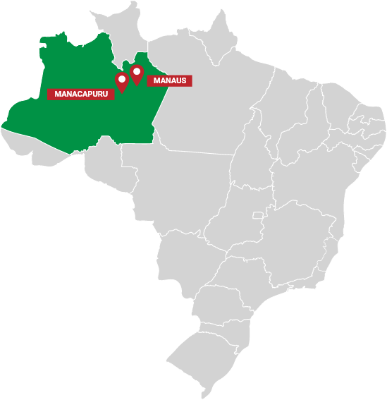
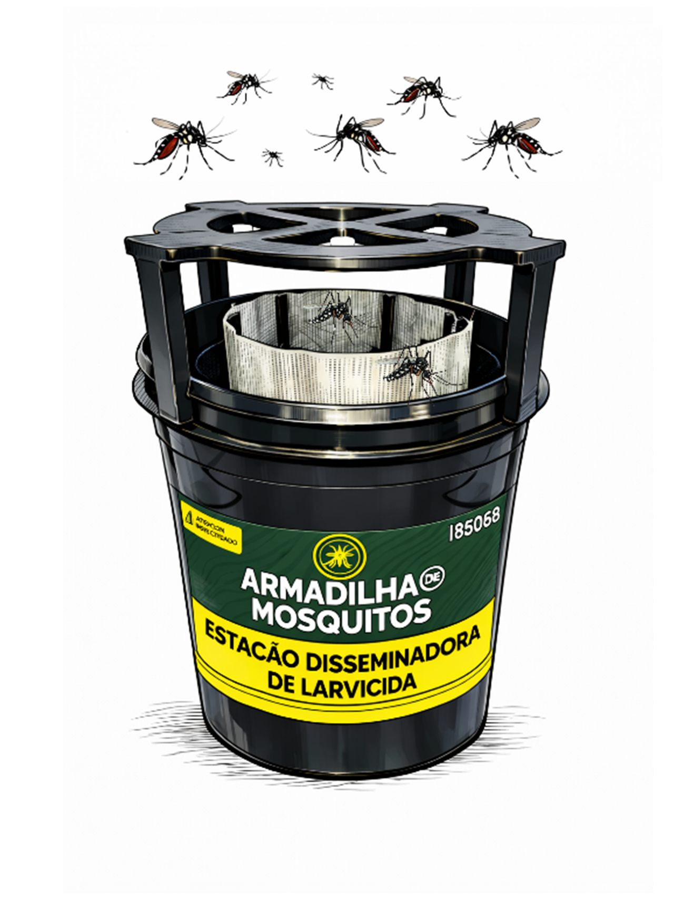

Módulo1/Aula3
O que é uma Estação Disseminadora de Larvicida (EDL) e como funciona?
No combate aos mosquitos, a disseminação de larvicidas pelos próprios mosquitos (Itoh 1994, Devine et al. 2009), é uma estratégia que complementa as atividades de rotina preconizadas pela Coordenação Geral de Vigilância de Arboviroses (CGARB/SVSA-MS), órgão do Ministério da Saúde do Brasil que regulamenta as diretrizes para a vigilância e controle de arboviroses no país.
No Brasil, estudos realizados por pesquisadores da Fiocruz Amazônia, testaram a disseminação de piriproxifem com sucesso no laboratório e em áreas abertas de extensão reduzida. Nestes estudos, demonstrou-se que a eficácia, ou seja, a disseminação do larvicida pelas fêmeas, é adequada na escala de bairro de uma cidade de 60 mil habitantes.

Resultados de ensaios realizados em Manaus e Manacapuru (Amazonas) mostraram uma alta cobertura de criadouros (>94%), com disseminação efetiva até 400 m de distância das Estações Disseminadoras de Larvicida (EDL’s) instaladas em campo. Do mesmo modo, produziu-se um importante aumento da mortalidade de mosquitos imaturos (de ~5% para ~95%) e uma redução de 96-98% da emergência de mosquitos adultos em poucas semanas (Abad-Franch et al. 2015; 2017).

Além disso, estudos realizados em Brasília, mostraram uma redução de 66,3%, na densidade de mosquitos adultos de Aedes (Garcia et al. 2020).

VOCÊ SABIA?
Desde 2017, com apoio do Ministério da Saúde, a Organização do Tratado de Cooperação Amazônica e a Organização Pan-Americana da Saúde, pesquisadores do ILMD/Fiocruz Amazônia testaram a eficiência da implantação e manutenção da estratégia das EDL’s em quatro municípios do interior do estado de Amazonas (Borba, Tefé, Parintins e Tabatinga) e em oito municípios de outros estados (Marília-SP, Recife-PE, Natal-RN, Porto Nacional-TO, Belo Horizonte-MG, Goiânia-GO, Fortaleza-CE e Roraima-RR).
O objetivo do projeto foi identificar as “intercorrências” da aplicação do instrumento na prática (na escala real dos programas de controle e com os meios e recursos disponíveis nessa escala), em diferentes cenários de cidades e suas paisagens ecológicas. O desafio foi testar, de forma replicada, a eficácia e eficiência do instrumento na escala das grandes cidades, onde a maioria dos casos de doenças transmitidas por Aedes ocorrem.
Com participação da representação da OPAS no Brasil e da Coordenação Geral de Vigilância de Arboviroses (CGARB/DEDT/SVSA-MS), foram realizadas reuniões com os gestores de saúde dos municípios selecionados para pactuar o desenho do estudo, o monitoramento entomológico e a implantação do instrumento. Assim, foram selecionadas as áreas de intervenção com EDL’s com suas respectivas áreas controle em cada município.
Foram avaliadas a eficácia e eficiência das EDL’s através de indicadores entomológicos e epidemiológicos, visando estimar o efeito atribuível da estratégia na densidade populacional de Aedes spp., e se possível, da incidência de arboviroses nos municípios participantes. As análises dos dados do monitoramento com ovitrampas realizado nos diferentes municípios mostraram a diminuição da dispersão do vetor pelo Índice de Positividade de Ovitrampas (IPO) e da densidade de ovos pelo Índice de Densidade de Ovos (IDO) de Aedes spp. na maioria das áreas de intervenção (com EDL’s), quando comparadas com as áreas controle (sem EDL’s). Nas cidades de Fortaleza-CE, Belo Horizonte-MG, Marília-SP, Manaus-AM e Goiânia, evidenciou-se redução aparente da incidência de casos de dengue nas áreas de intervenção (com EDL’s), quando comparados com as áreas controle.
As pesquisas identificaram que a implantação concentrada das EDL’s, em áreas estratificadas de alto risco para arboviroses, baseadas em indicadores entomológicos, epidemiológicos e sociodemográficos, mostraram resultados mais acelerados e mais contundentes.

PALAVRA DO ESPECIALISTA
Quer saber mais sobre os pontos estratégicos para a instalação de uma EDL? Assista o vídeo do especialista.

E o que são as Estações Disseminadoras de Larvicidas?
Essas estações são instrumentos que facilitam a disseminação de larvicida pelos próprios mosquitos, entre locais tratados com o larvicida e criadouros não tratados. Trata-se de um pote plástico com água para atrair os mosquitos Aedes, recoberto com tecido preto umedecido, no qual é impregnado um larvicida em pó muito fino.
Quando um mosquito adulto pousa na superfície da EDL, partículas do larvicida se aderem às pernas e ao corpo do mosquito. Como as fêmeas de Aedes preferem visitar muitos criadouros para colocar uns poucos ovos em cada um, elas disseminam o larvicida para esses criadouros, que viram armadilhas letais para os mosquitos imaturos (Itoh 1994, Sihuincha et al. 2005, Devine et al. 2009, Abad-Franch et al. 2015, 2017).
Como funciona uma EDL
![Desenho explicativo de como funciona uma estação disseminadora de larvicida em quatro etapas. Na primeira etapa o mosquito fêmea do aedes aegypti procura um local para colocar seus ovos, na segunda etapa tem a foto de uma estação disseminadora de larvicida (EDL) destacando o desenho de um mosquito, o mosquito pousa na EDL e se impregna de larvicida no contato com suas patas e partes do corpo, na terceira etapa o desenho de um mosquito voando, ele procura outros criadouros para colocar mais ovos, na quarta etapa ele pousa em outros criadouros e os contamina com o larvicida que está em seu corpo, matando as formas imaturas do inseto, abaixo da explicação o desenho de um vaso com água, acima da água está o mosquito, abaixo da água larvas e pupas.](../assets/images/modulo1/aula3/img5.png)
O mosquito passa a ser um grande aliado no controle das doenças!
Essa técnica, além de eficiente, não necessita de grandes investimentos, pois os materiais para a montagem de uma Estação Disseminadora de Larvicida são de baixo custo e fácil aquisição, tanto com os materiais necessários para a montagem, impregnação, instalação e manutenção das EDL’s.
Veja como é simples a composição de uma Estação Disseminadora de Larvicida:
![Explicação de como montar uma estação disseminadora de larvicida com fotos de diversos objetos. No lado esquerdo do banner a foto de um pote preto com um pano na borda, com uma etiqueta no centro escrito “Controle de mosquitos” e uma pessoa com luva branca passando o pincel na borda, acima dessa foto, a foto de um pote transparente com as descrições de 1.800 ml, altura de 15 cm, diâmetro superior a 14,5 cm, diâmetro inferior a 12,5 cm, ao lado a foto de um pote plástico preto de 500 ml com tampa, continuando com um tecido tipo Oxford preto (50cm x 20cm) preferivelmente tecidos com acabamento, uma caneta marcadora permanente, ponta 2.0 na cor azul ou preta, uma caneta esferográfica comum com ponta 1.0 preta ou azul, clips galvanizados n° 8/0 de 5 cm, etiqueta adesiva de identificação da EDL colorida (12cm x 6cm), pincel chato de cerda sintética n° 18 de 2cm por 2,1cm, prancheta A4, pote coletor universal de 50-80 ml, na foto um pote transparente com tampa vermelha e colher medidora de plástico de 5g ou menor.](../assets/images/modulo1/aula3/img6.png)

CURIOSIDADE
O produto recomendado para uso com as EDL’s deve apresentar formulação granulada com concentração de 0,5%, misturado com areia de origem vulcânica, o que permite uma residualidade de até 8 semanas. O produto deverá passar pelo processo de micronização, a cargo do Ministério da Saúde, processo padronizado pelo Núcleo de Pesquisa de Patógenos, Reservatórios e Vetores – PREV Amazônia do Laboratório de Ecologia de Doenças Transmissíveis na Amazonia - EDTA, do Instituto Leônidas & Maria Deane – ILMD/Fiocruz Amazônia. O piriproxifem micronizado é o larvicida autorizado para o uso com Estações Disseminadoras de Larvicida pela CGARB/DEDT/SVSA-MS.